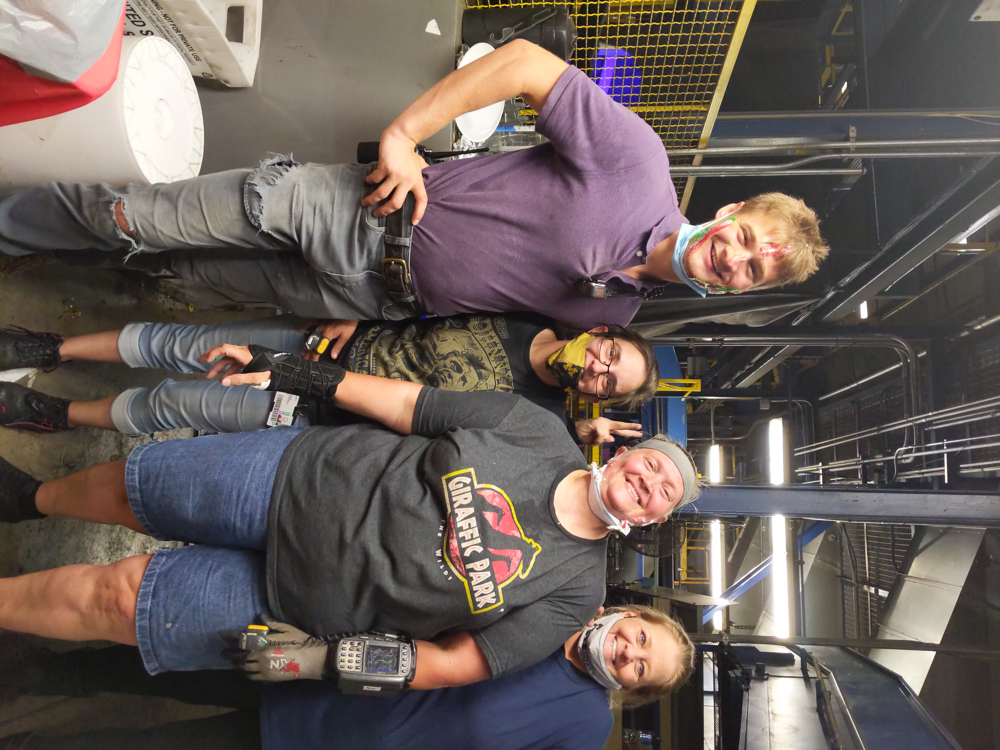
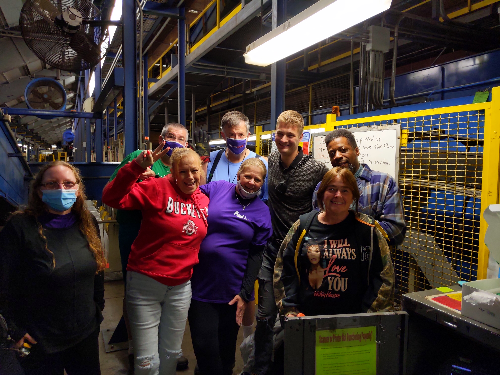
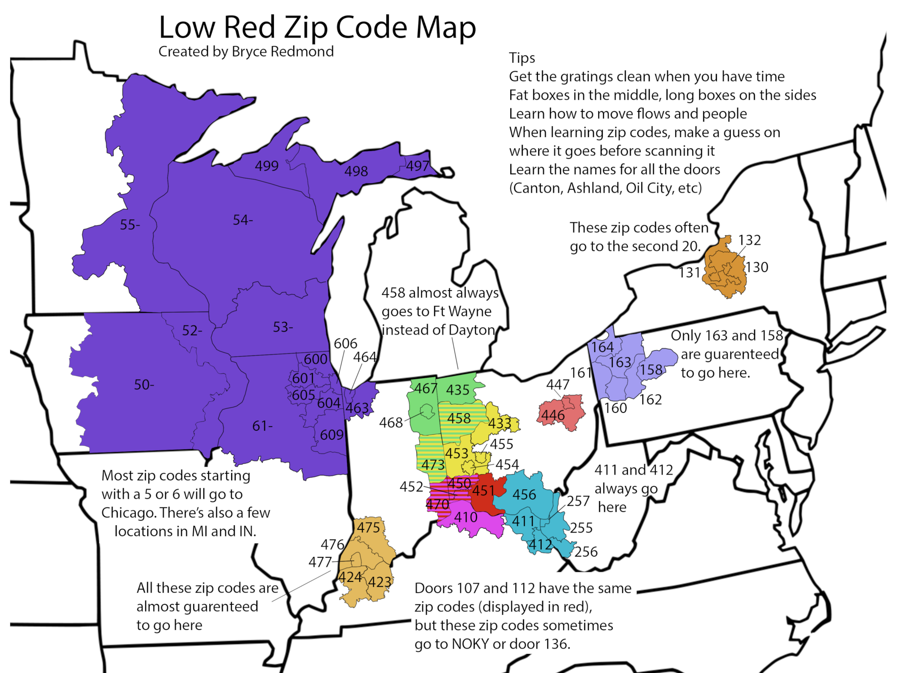
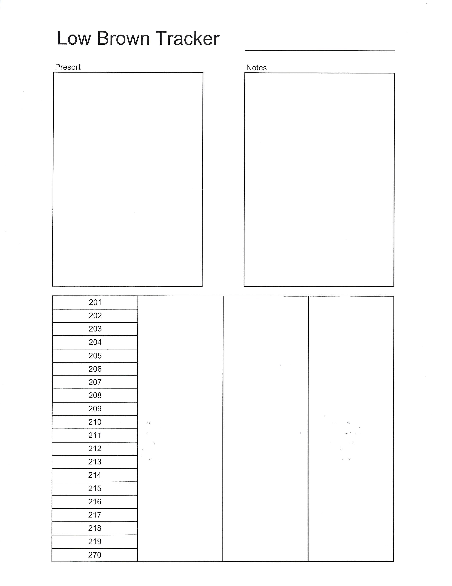
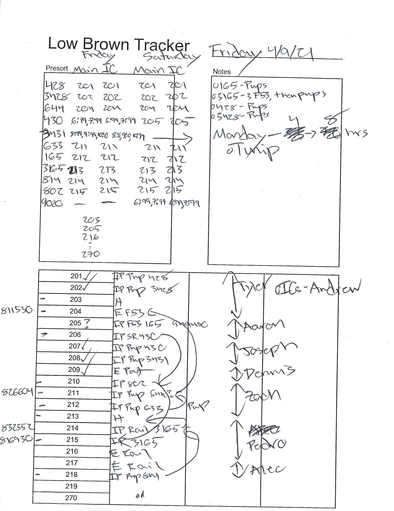
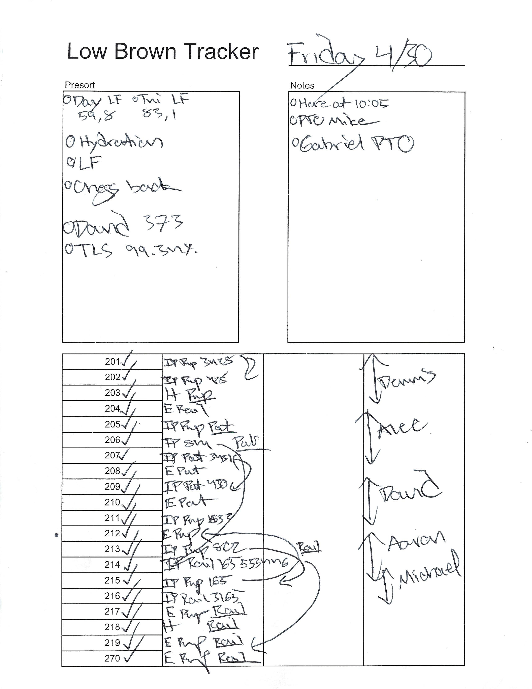

A package handler from the smalls area was moving to Tennessee and the others threw him a small going away party. I got cake smeared on my face... the culprit is pictured.

The smalls area threw a going away party for me, as well, as I prepared to move to Athens. I enjoyed all the nice messages in the card.

My job as a package handler at Fedex Ground required me to scan each package and sort it according to its destination trailer. It is fast paced, and can be made more efficient if scanning is eliminated. Over time, I familiarized myself with every trailer destination and the zip codes of the surrounding areas. As a result, I was able to correctly sort over 95% of the packages that came through entirely without a scanner. I was dedicated to helping others learn zipcodes as well, and I set out to find the best way to teach. Using photoshop, I created this map that shows a visual representation of the area's destinations and the zipcodes that went to that trailer.



These are examples of a "job-aid" that I made during my time as an Operations Manager at FedEx. I used it every day to organize my thoughts and figure out what package handlers I would place where. The second two images are examples of how I actually used it. Though it may look like a bunch of scribbles and arrows, I had my methods down to a science and it helped me greatly when setting up for the start of the shift.